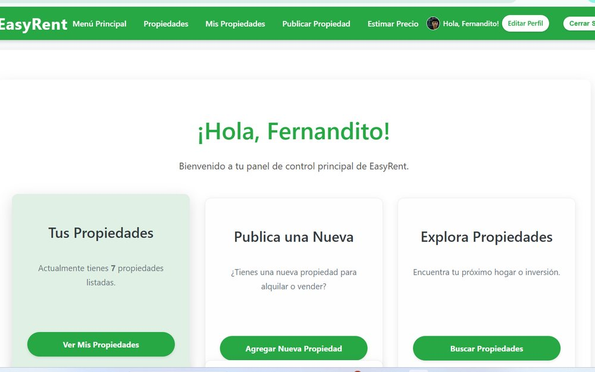

Desarrollo Web · Inteligencia Artificial · Bases de Datos
Estudiante de Ingeniería de Software interesado en construir aplicaciones que resuelven
problemas reales, combinando desarrollo backend, diseño de bases de datos y modelos
de inteligencia artificial aplicados.
Construyo software con intención de resolver problemas reales
Soy estudiante de Ingeniería de Software, interesado en el desarrollo de aplicaciones
web y en la creación de soluciones tecnológicas que respondan a necesidades concretas.
Tengo experiencia académica desarrollando proyectos con tecnologías como Python, Django,
SQL Server, HTML, CSS y JavaScript.
También me interesa la inteligencia artificial y su aplicación en sistemas de software,
especialmente para automatizar procesos y apoyar la toma de decisiones. Actualmente
continúo fortaleciendo mis conocimientos en desarrollo de software, bases de datos,
inteligencia artificial y gestión de proyectos.
Habilidades
Tecnologías que aplico en cada proyecto
Cada nivel refleja la profundidad con la que he usado la tecnología en los proyectos
descritos más abajo, no una autoevaluación abstracta.
Frontend
HTML5 & CSS3
Maquetación semántica y sistemas de estilos con variables CSS.
JavaScript
Interactividad de interfaz, validación de formularios y DOM.
React.js
Interfaces por componentes, usado en GUIOSPRO FLOSS Web.
Backend & Programación
Python
Lenguaje principal en desarrollo web e inteligencia artificial.
Django
Backend de EasyRent: lógica de negocio y modelos de datos.
Django REST Framework
API REST y autenticación por roles en GUIOSPRO FLOSS Web.
Bases de datos
SQL Server
Diseño y consultas para el sistema de EasyRent.
PostgreSQL
Modelado relacional normalizado hasta 3FN en GUIOSPRO.
Modelado de datos
Diagramas entidad-relación y normalización de esquemas.
Inteligencia artificial
TensorFlow & Keras
Entrenamiento de modelos en el proyecto de clasificación de galaxias.
Redes neuronales (CNN)
Uso de arquitecturas convolucionales como ResNet50.
Herramientas & gestión
Git & GitHub
Control de versiones en todos mis proyectos académicos.
Figma
Prototipado de interfaces antes del desarrollo.
Docker
Entornos reproducibles para GUIOSPRO FLOSS Web.
Scrum
Metodología ágil aplicada en desarrollo por sprints.
Proyectos destacados
Proyectos académicos y de investigación
Filtra por tecnología o revisa el detalle de cada proyecto.

Panel principal — EasyRent
EasyRent
Plataforma para gestionar propiedades en alquiler, con estimaciones de precio
generadas mediante inteligencia artificial.
Migración de una aplicación de escritorio a una plataforma web para evaluar la
adopción de software libre mediante análisis de factores y resultados FODA.
Los tokens y componentes que se muestran aquí son exactamente los que construyen
el resto de este sitio, definidos como CSS Custom Properties en :root.
Color
Primary--color-primary
Accent--color-accent
Background--color-paper
Surface--color-surface
Text--color-text
Text muted--color-text-muted
Tipografía
Título h1 · Fraunces
--fs-h1
Título h2 · Fraunces
--fs-h2
Título h3 · Public Sans
--fs-h3
Párrafo de contenido en Public Sans, usado para todo el cuerpo de texto del sitio.
Problema que resuelve: administrar propiedades en alquiler y estimar precios de forma manual es lento y poco objetivo.
Solución: plataforma web para gestión de propiedades y usuarios que incorpora inteligencia artificial para generar valoraciones y estimaciones de precio.
Problema que resuelve: una aplicación de escritorio limitaba el acceso y la colaboración al evaluar la adopción de software libre.
Solución: migración a una plataforma web bajo metodología Scrum, con autenticación por roles, evaluación de factores y subfactores, análisis FODA e historial de evaluaciones.
Mi participación: ingeniería de datos y procesamiento de resultados — modelado y diseño de la base de datos PostgreSQL, y la lógica de generación de resultados FODA y recomendaciones A, B o C.
Problema que resuelve: clasificar manualmente grandes volúmenes de imágenes astronómicas es inviable a escala.
Solución: modelo de deep learning entrenado sobre el dataset público Galaxy Zoo para identificar automáticamente distintos tipos de estructuras galácticas.
Tecnologías: Python, TensorFlow, Keras, ResNet50, CNN, Google Colab, Streamlit, GitHub.